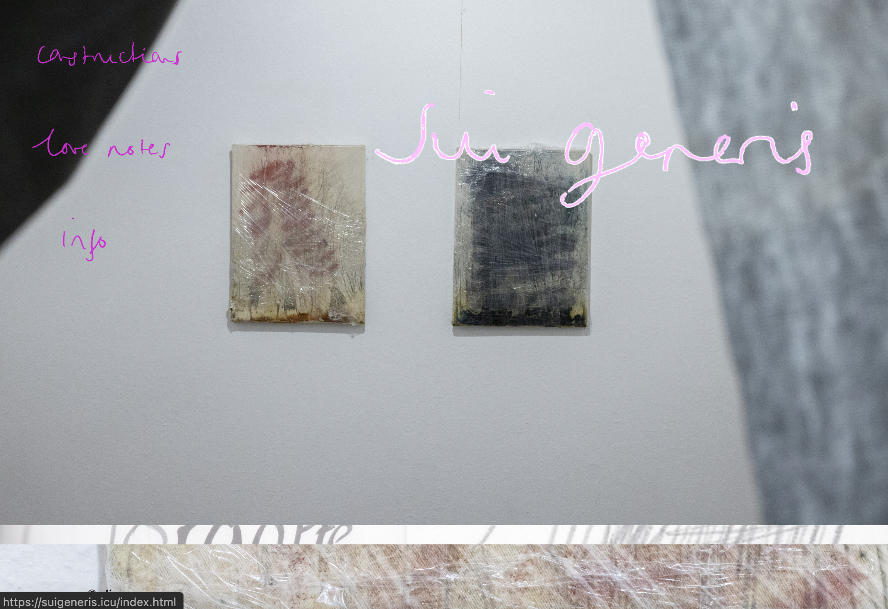
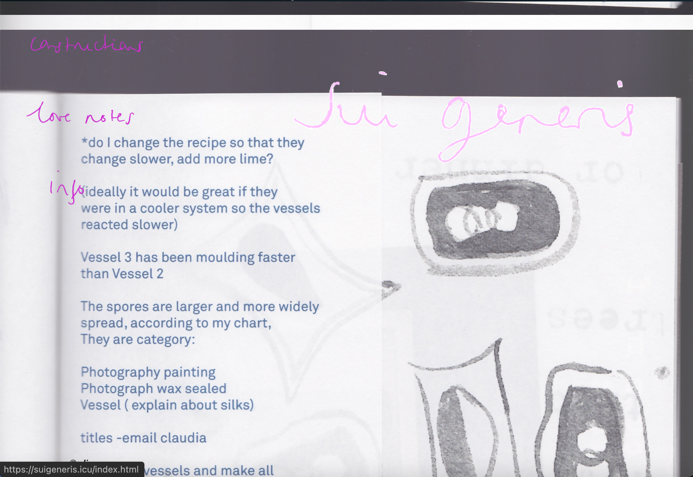
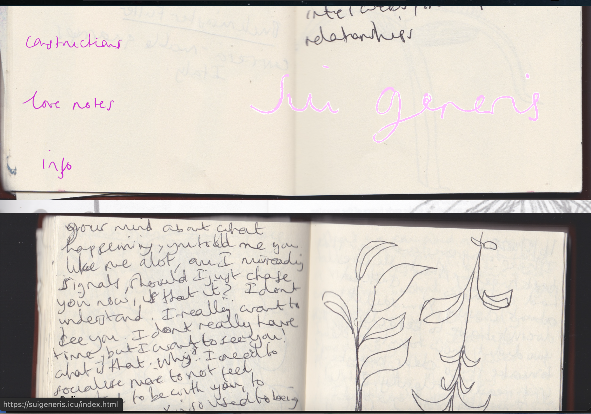
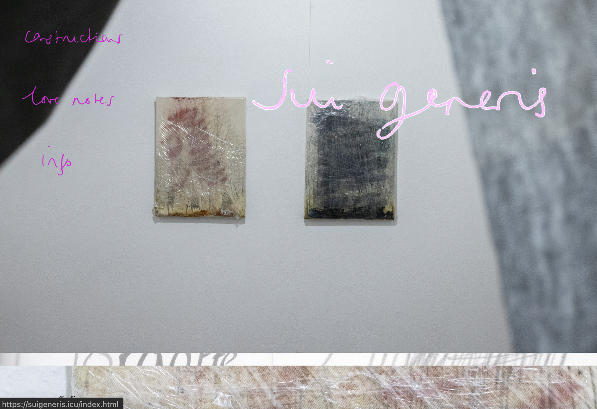
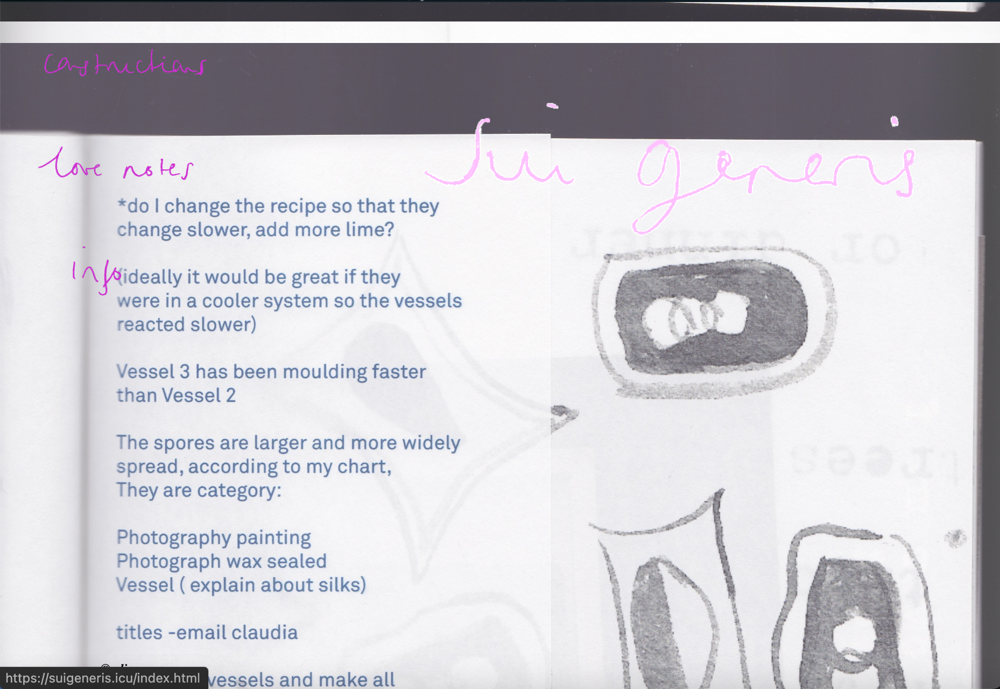
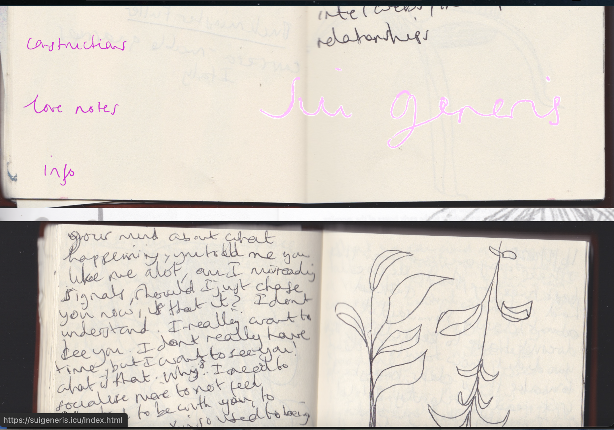
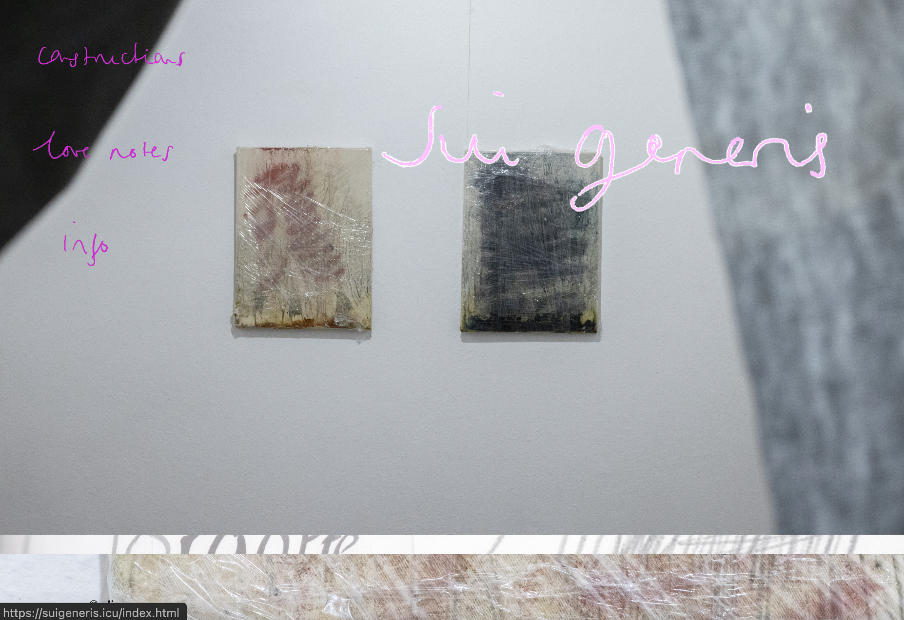
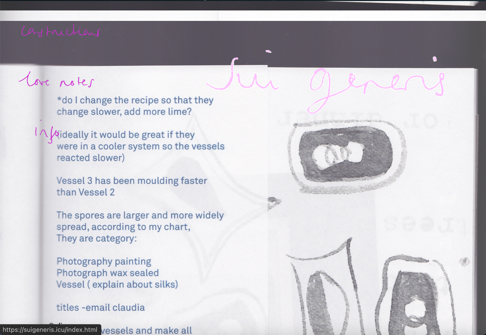
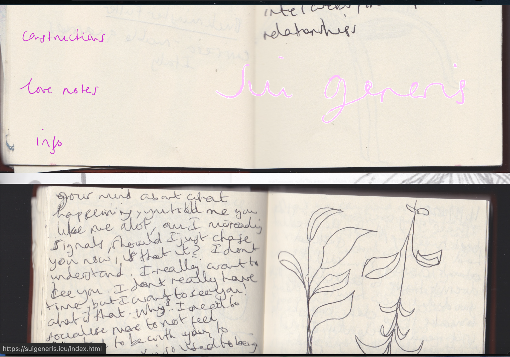

Sui Generis Project
 





Sui generis is a personal project website. The website is built using HTML, CSS, and JavaScript. The website is responsive and uses a mobile-first approach.



Sui generis is a personal project website. The website is built using HTML, CSS, and JavaScript. The website is responsive and uses a mobile-first approach.